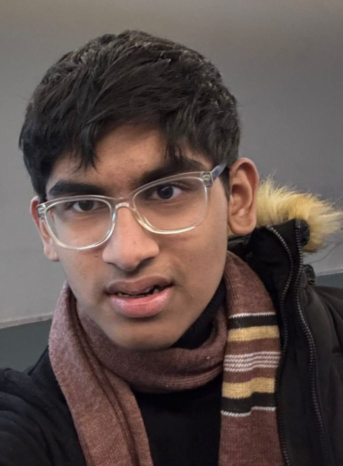

Laureate‑Level Advice
Proven strategies to elevate your essays and reach the highest academic honours.
English GP (8021) Tips
- Write a detailed plan of the essay structure before starting to write
- Use the “SHEEESCP” to brainstorm ideas, before starting the essay. This allows multiple perspectives to be explored.In other words, try to depict a different theme/point of view in each paragraph namely Social, Health, Economical, Environmental, Educational, Science, Political, Philosophical, etc.
- In the beginning, focus more on quality. Even for me, writing an essay in 1h30 was difficult in lower 6. Hence, I advise to you to focus on perfecting your writing style, essay structure and vocabulary.
- Supporting materials are essential to GP essay writing. However, coming up with them on the fly can be difficult. That's why research work is so important. When writing the essay plan try to search for the numbers, quotes, statistics and examples online. The supporting material should also be noted in a separate notebook so that it could be used for future essays.
- For the essay structure, I would try to write 5 body paragraphs, 4 if the title is restrictive. Still there are other ways to structure it. This is just my way of doing it.
- For the introduction, I often try to start with a hook(quote,number,statistic) to grab the examiner's attention.
- For the conclusion, I try to end it on a high note, namely with a quote, all while giving my stance (if the question is how far do you agree).
- Build a personal lexicon of sophisticated transition phrases and fancy vocabulary.To view mine, look in the vocabulary page.
- To build one's critical thinking and vocabulary, read 2-3 articles per day. I recommend The Guardian due to its high level of english.
- For those who inspire to become laureates, I recommend writing at least one essay per week. As you progress to Upper 6, make it two. For me, in the second term of Upper 6, I would write 3-5 essays per week given that GP was my weak point. I didn't like it but I knew that's what I had to do to achieve my end goal.
- Practise one GP comprehension per week.
French Subsidiary (8001) Astuces
- Maîtrisez la structure de la rédaction : introduction, développement en 4 parties, conclusion.
- Utilisez des connecteurs logiques variés (cependant, par ailleurs, en revanche).
- Préparez 3-4 themes avec lequelles vous etes a l'aise. C'est a dire dans dans un cahier listez des exemples, des chiffres et des citations qui peuvent etre utilisé pour des rédactions futures.
- Pour pratiquer, faites une rédaction chaque semaine.
- La grammaire compte beaucoup dans le bareme de la rédaction. Alors, relisez attentivement chaque ligne, chaque mot, toute en étant dans la peau de l'examinateur.
- Faites des plans détaillés avant de rédiger,comme en GP.
- Essayez de viser 35+/40 ou 27/30 en rédaction
Becoming a Laureate: Strategies and Advice
- Plan your day the night before and write down the tasks that have to be completed. Tick the tasks that were completed. In my case, I tried to fix 3 main tasks. For example, a mathematics paper 3, a chemistry MCQ and a physics paper 2 was an average day in my HSC years.
- I dedicated a part of my day to my work. In fact, on most week days, I made an effort to work from 19 00 to 23 00(with a few breaks in between) I never pulled all-nighters.Still to lighten my evening workload, I tried to work during free periods at school.
- The summer vacation at the end of lower 6 should not be wasted and be used to clear all the doubts of the year, to practise as much as possible, and get ahead.
- For mathematics, try to aim for full marks as it is in reach if you manage to avoid silly mistakes. For most questions, it is possible to check if the answer is right. For example, if 2x + 5 = 9 and you get x=1. By checking, 2(1) + 5 =7 which is not equal to 9. When you differentiate a function f(x), and obtain a function g(x), try to integrate g(x) and check if you obtain f(x).
- For physics and chemistry, P3 and P5 should be guaranteed full marks. For P4, try to aim for above 95/100. P1 and P2 are very tricky and a few marks may be lost, but still try to aim for full marks

The greatest dreams require the greatest sacrifices
Youngest Laureate of Mauritius (HSC Cambridge)